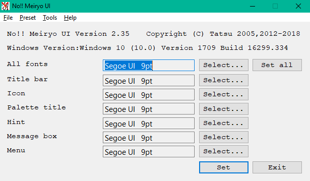

Rode o noMeiryoUI.exe.
Este
ícone ( ).
).
E,
abaixo, a janela é exibida.

Pressione
o botão Selec. ...
(Selecionar) para definir o elemento da interface do usuário.
Quando você pressionar o botão Selecionar..., esta janela será exibida.

Escolha o nome, o tamanho e o
estilo da fonte, o conjunto de caracteres e pressione o botão OK.
Pressione o botão Configurar e você poderá definir a fonte da interface do usuário.
Opção linha de comando .
O formato da
linha de comando está abaixo.
noMeiryoUI [font_setting_file] [-set]
Se você especificar o arquivo de configuração da fonte, ele será carregado quando este programa for iniciado.
If you use multiple options you must separate option name by space.
Options
In [options...], you can use these options.
If you use multiple options you must separate option name by space.
- -set
-set option can set systems fonts on start up and exit program.
This option is useful for startup shortcut, launcher setting, batch file.
- -delay
-delay option delays system fonts change by seconds.
You must specify delay time be seconds. For example, -delay 60.
You can use this option to prevent system changes system fonts in some reasons
- -force (no warranty)
-force option enables to change title bar font on Windows 11 22H2 and later.
On Windows 11 22H2 and later, when you try to change title bar font, unknown troubles may occurred.
This is why, this option is no warranty.